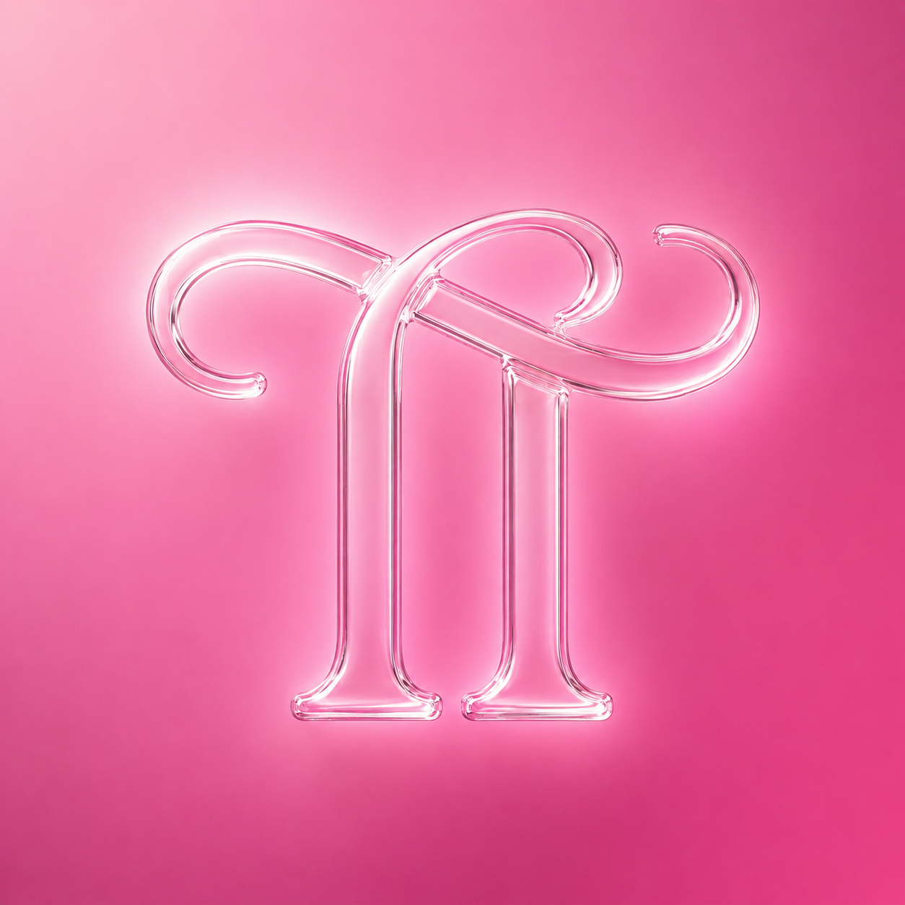

30 Erlebnisse für zwei — von süß bis abenteuerlich. Tippe Ich hab's oder Noch nie und entdeckt, was ihr schon zusammen erlebt habt. Garantiert inspirierend für neue Pläne.
Jetzt spielen
TrueThings hat 130 „Ich hab noch nie"-Fragen in 10 Kategorien — plus 5 weitere Paare-Spiele, tägliche Fragen und vieles mehr.
TrueThings kostenlos laden